每次想到宫崎骏的作品，心里总会有一种说不出来的感动。
这种感动很特别，像是在一片煤渣子中看到了一块水晶，那样纯净，但同时又那样让人悲伤，生怕这块水晶被煤渣子污染。
可到最后，这块水晶不仅没有被污染，反而像是有了生命一样，竟然在黑暗中发出了一道光芒。

那道光柔和谦卑、洁白无瑕，能照亮人心底里的孤独和黑暗。
最近，我才忽然意识到，原来那道神奇的光芒并不属于这个世界，而是来自于另一个世界。
一个有神的世界。
-01- 河神
《千与千寻》的故事源于一个悲剧。
白龙是河神 ，他的那条河叫做琥珀川。
琥珀川后来因为人类工业进程而被填埋，为了让琥珀川重新流动，白龙进入神隐村找汤婆婆学习魔法，但却被夺走了名字，忘记了过去的一切。
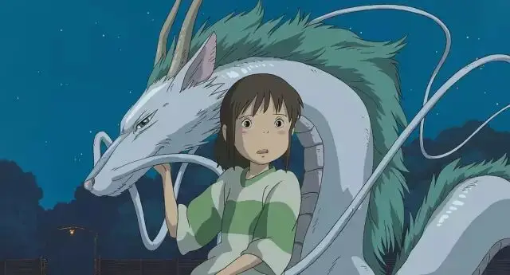
可神奇的是，白龙却没有忘记小千寻，没有忘记这个多年前被自己救起的落水女孩。
在千寻差点忘记自己名字的时候，白龙送给千寻一张贺卡，贺卡里写着千寻的名字。
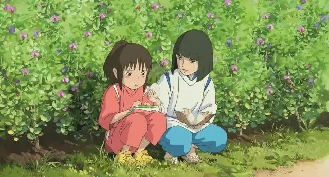
白龙叮嘱千寻，要好好地把自己的名字藏好，因为一旦名字被忘记了，也就会忘记回家的路。
作为河神，白龙的身上闪耀着巨大的爱和信念，千寻在他的鼓舞下变得坚强勇敢。
千寻也最终救赎了河神，《千与千寻》中的那一幕非常动人。
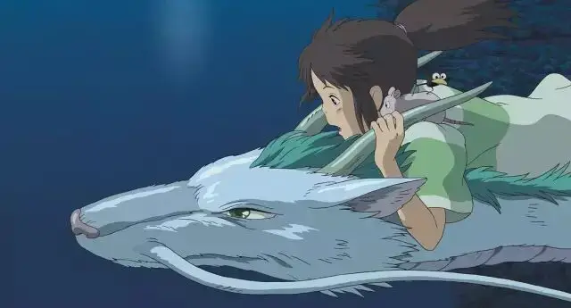
当千寻骑在白龙身上飞行在一条河上时，她忽然想起自己小时候被救的经历，她告诉白龙“那条河的名字叫琥珀川……对了，你的名字是琥珀川“
瞬间，在美丽的夜色下白龙羽化成人：“琥珀川……我想起来了！我的名字是，琥珀主，振早见·琥珀主！“
这一幕真的很美，千寻也无比感动，她激动的眼泪不停地从眼眶中飘向空中。
《千与千寻》里的神性之爱跨越时空，能让人找到生命的名字，找到回家的路。
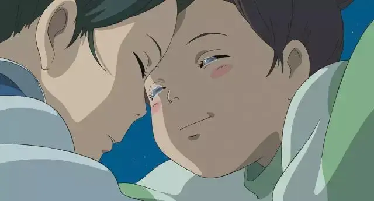
-02- 站在金色草原上的蓝衣人
《风之谷》的故事背景让人无比绝望。
人类工业文明发展到一定程度，并没有给这个世界带来祝福，反而是将大自然破坏殆尽。
最终，世界上出现了一片腐海。
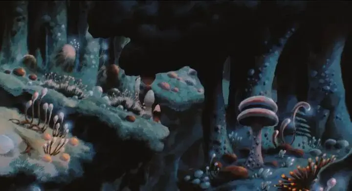
腐海散发出的毒气可以很快让森林和人类消亡，而生存在腐海里的王虫更是人类的噩梦。
一个人一旦被王虫攻击，几乎没有生还的可能。

人类就是在腐海的威胁下零星地散落在各个地方，并不断面临腐海不断扩张的境地。
所以有很多人想方设法要除灭王虫和腐海。
但风之谷的娜乌西卡公主却很特别，她似乎能与王虫交流，能够将一只愤怒的王虫安抚。
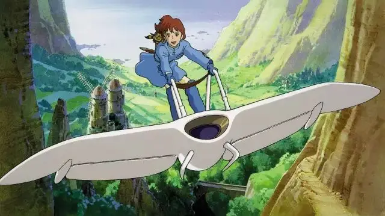
但人类世界终因利欲熏心而发生战争，娜乌西卡意外坠入腐海深处。
娜乌西卡发现了一个惊人的真相，原来腐海并不是在毒害这个世界，相反是在净化这个世界，而王虫则一直在守护着森林。
可人类极其诡诈，敌人为了攻陷风之谷，他们故意打伤一只王虫宝宝，并将它运往风之谷，企图将王虫的攻击引向风之谷。
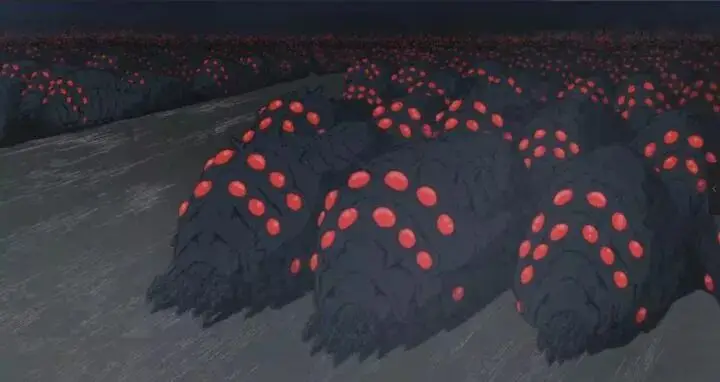
最终，成群结队的王虫愤怒地奔向风之谷，一片世外桃源眼看要成为一片荒芜。
娜乌西卡为了平息王虫的愤怒，以拥抱来迎接王虫的进攻，并最终死亡。
神奇的是，娜乌西卡的善良和牺牲让王虫清醒，一只又一只王虫用自己金黄色的触角抚慰着娜乌西卡的尸体。
忽然，娜乌西卡竟然得以复活，走在金色的“草原”上。
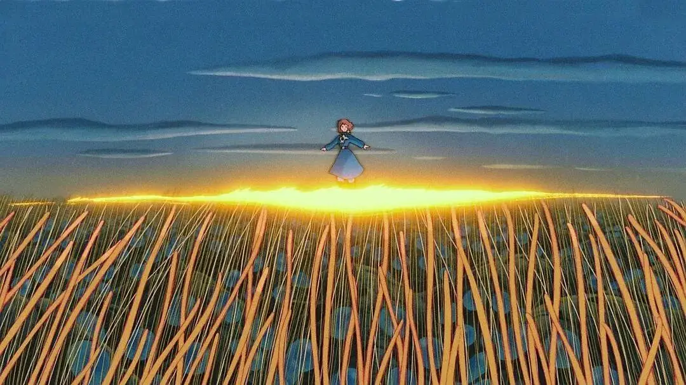
“有着白翼的鸟人使徒，其人身着蓝衣降临于金色的草原，引领人类走向新生。”
娜乌西卡就是那个古老传说中的蓝色天使，她的死悲壮到让整个大自然流泪，她的复活让肤浅物质的人类低下了无知的头颅。
这就是《风之谷》中神性的光辉。
-03- 山兽神
《幽灵公主》描述出人类的一个巨大悲哀：人类文明到一定“高度”竟对大自然失去了敬畏。
山兽神作为森林的守护神，哺育着森林和人类。

可人类非常狂妄，想要猎杀这位森林之神。
所以幽灵公主和人类决裂，她和狼族共同守卫着美丽的森林。

但人类的狂妄和贪婪远超过幽灵公主的想象，守护神的头颅被人用枪猎取。
人类自以为杀死了“上帝”，却不知道早已经活在了“上帝”的咒诅之下。
森林消逝、绿草成灰，人类不知道，他笑的最狂妄的时候恰恰就是他灭亡的日子。
《幽灵公主》里的神性充满着神圣和公义，这部悲壮的史诗只告诉人类两个字：敬畏！
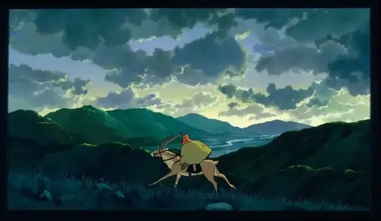
-04- 龙猫
《圣经》中说“我确实地告诉你们：你们如果不回转，变得像小孩子一样，绝不能进入天国”。
《龙猫》就是这样一个故事，只有柔软谦卑的小孩子才能看到森林里的神明——龙猫。

龙猫会在你没有打伞的雨天给你递一把伞。
会帮助你一起将埋在地里的“梦想”长大成参天大树。
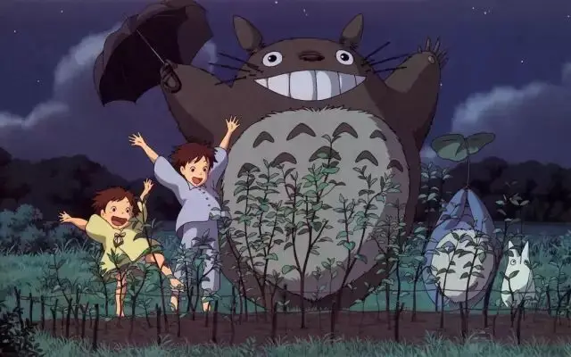
会在你迷路时送你回家。
《龙猫》里的神性是爱，是安慰，是回家的钥匙。
-05- 圣诞节
宫崎骏的作品非常有灵性，会让人沉溺其中无法自拔，甚至会觉得自己所处的物质世界反倒不是真实的。
这也恰恰说明，我们就像丢了心的哈尔一样，虽然很多时候我们是行尸走肉，但当神性之光闪耀的时候，我们便会觉察内心的空缺。
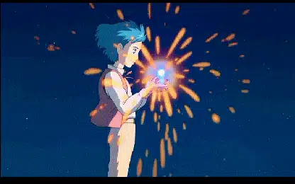
这个空缺关系我们生命的名字，关系我们回家的路，关系我们是否拥有敬畏的智慧。
而这个空缺所需要的光芒并不是来自于我们眼目能及的世界，而是来自于我们难以想象的神性世界。
从宫崎骏作品的影响力来看，我们虽是社会主义栋梁，但有神的世界我们其实并不陌生，甚至早已心向往之。
今天，全球几十亿人就活在一种神性的盼望之中。
上帝之子，降生在马槽之中。
为了爱，也为了圣洁和公义！
不要以为我们离神很远，其实我们就活在这个伟大的童话世界中。
就像宫崎骏作品中那样，虽然现在到处是战争、工业垃圾、环境污染、逼迫和狂妄，但是救赎之光早已闪亮。
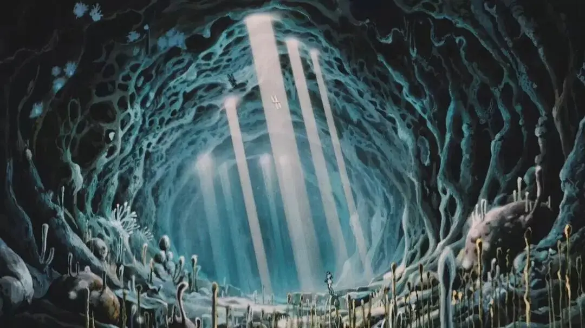
最后，用《悬崖上的金鱼姬》中一句话祝大家节日快乐:
信仰到底是什么呢？就是纵身一跃，就是我们跟神之间的一个永远的约定，是舍弃旧的去开始新的生活；信仰就是从今以后，再也不要放开你的手。

-END-
这里没有挑逗你眼目情欲的小鲜肉
也没有挑动你肉体情欲的段子
更没有膨胀你今生骄傲的鸡血
我们只在乎那些最质朴真诚的作品
在那里我们才能恢复真正的想象力
我们也坚信这才是我们真正需要的

ID:Six_hundred_hits
长按二维码，一键关注
【六百击】
电影评论
尽情分享朋友圈

微信二维码打赏通道